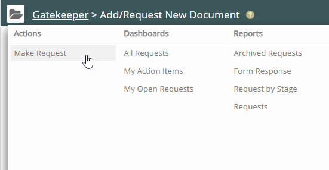
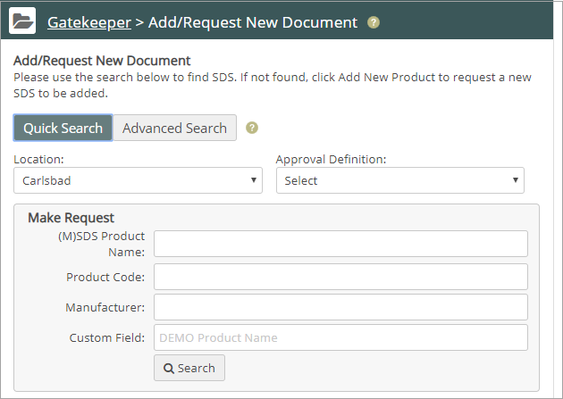
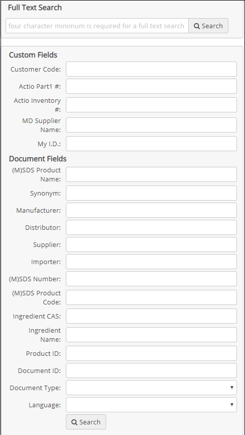
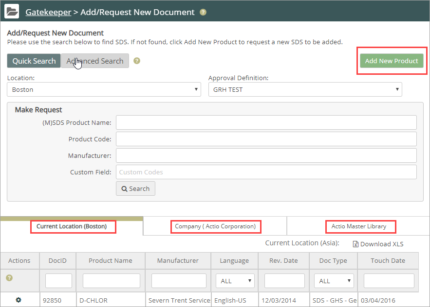

Product requests follow the approval process defined by the Gatekeeper administrator.
To make a product request:
Click the Gatekeeper Main menu. In the Gatekeeper Navigation panel, under Actions, select Make Request.

The Add/Request New Document page displays.

Fill in product information to search for.
To search by additional fields and criteria, click Advanced Search. You can then search using additional criteria.

Click Search.
Gatekeeper displays products in three tabs: your current location, your entire company, and the Master Library.
You can choose a product already listed, or use the Add New Product button to request a product not in your Vault or the Master Library. Gatekeeper expands the form with fields where you enter new product information. On approval, Gatekeeper assigns the document to your Vault in the location you specified.
